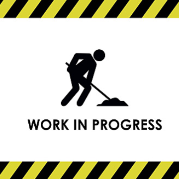
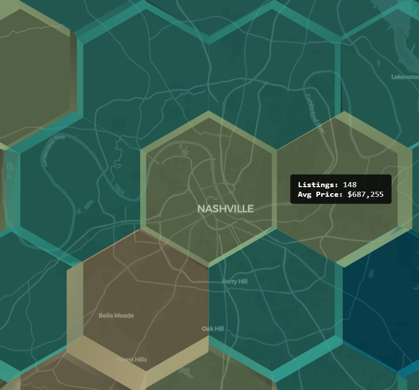

About
Hello!
I go by Blake, and I'm a passionate software developer. My expertise lies in working with Python and JavaScript, but I'm also proficent in C++, Java, and SQL.
I'm a May 2026 graduate of Trevecca Nazarene University, with a Bachelor of Science in Computer Science, and I'm excited to take what I've learned from my classes and my internship experience into the workforce.
You can find my full chronological resume here: Resume

Portfolio

D&D Session Calendar App

Price Landscaper
Developed during my Senior Seminar Class, this is a web application that provides users with price comparisons for real estate listings on Redfin across Tennessee.
Airport Visualization
Community Involvement
President | Tabletop Club of Trevecca
January 2025 - May 2026Key Achievement: Scaled active membership by 200% and established a sustainable leadership framework for future semesters.
Strategic Growth: Revitalized a niche campus organization, growing active participation from 5 to 15+ consistent members through targeted event planning and campus outreach.
Organizational Leadership: Defined and recruited for new officer roles to ensure institutional continuity and operational success following my graduation.
Community Engagement: Partnered with Trevecca Towers to facilitate intergenerational gaming events, fostering community connections through tabletop play.
Award: Received "Best Decorated & Most Engaging Club Table" at Experience Trevecca Day (Oct 2025) for excellence in student recruitment and presentation.
Written Materials Coordinator | SGA Marketing Team
February 2024 - May 2026Key Achievement: Managed weekly mass-communication pipelines for the entire traditional undergraduate student body.
Newsletter Management: Orchestrated the production and distribution of the weekly student events email newsletter, ensuring 100% on-time delivery to the campus community.
Cross-Functional Teamwork: Collaborated within the Student Government Association marketing team to align written messaging with visual branding and campus-wide initiative goals.
Information Architecture: Curated complex schedules of student events into a digestible, user-friendly format to drive student engagement and attendance.
Lead Peer Mentor | Trevecca New Student Program
August 2024 - May 2026Key Achievement: Facilitated the transition of 40+ freshmen into the university community, directly influencing a record-breaking rate of student leadership applications from the 2024 cohort.
Holistic Mentorship: Provided consistent academic and social guidance for freshmen within the LINK Class program, assisting in their successful integration into campus life and university culture.
Experiential Leadership: Successfully co-led the TREK outdoor-immersion program, managing group dynamics and safety during a multi-day hiking expedition designed to build resilient team bonds.
Leadership Development: Recognized for exceptional student engagement after my 2024-2025 cohort produced the highest number of future student leader applicants on campus, demonstrating effective mentorship and inspiration.
Curriculum Delivery: Assisted in teaching "Life Calling and Purpose" modules, helping students identify personal strengths and career goals through structured reflection and group discussion.
Gallery & Highlights
 Leading the TREK hiking expedition
Leading the TREK hiking expedition
 Award-winning Tabletop Club booth
Award-winning Tabletop Club booth
Academic Achievements
Phi Delta Lambda | Zeta Chapter
Inducted April 2026
University's Highest Academic Honor
Nominated and inducted into the international Nazarene honor society, representing the top 15% of the graduating class.
Maintained a GPA of 3.835 throughout the duration of the Computer Science program.
Recognized for exceptional scholarship, character, and leadership potential.
Dean's List | Trevecca Nazarene University
2024, 2025, and 2026
Achieved placement on the Dean's List for six consecutive semesters, maintaining a rigorous full-time course load in the Bachelor of Science in Computer Science program.
The National Society of Leadership and Success (NSLS)
Member since 2024
Selected for membership based on academic standing and leadership potential.
Completed leadership training modules focusing on goal setting, communication, and team management.
Class Salutatorian | Jo Byrns High School
Class of 2022
Graduated second in class rank out of the graduating cohort, demonstrating a foundational commitment to academic excellence prior to university enrollment.